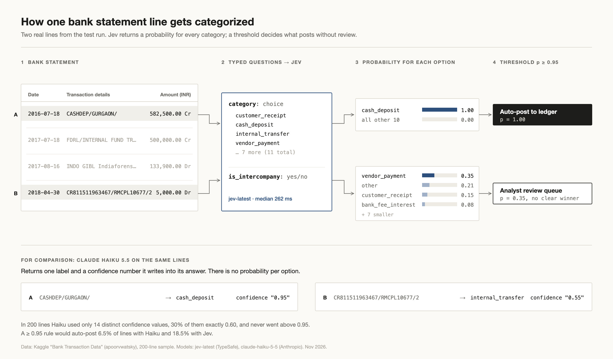

A small experiment on 200 bank statement lines, and what it says about which decisions in treasury you can safely automate
Every treasury team runs the same tedious loop. Each morning, bank statements arrive with hundreds or thousands of lines like TRF FROM Indiaforensic SERVICES or CR719811510098/RMCPL15265/1. Someone has to decide what each line is: a customer payment, a vendor payment, a transfer between the company's own accounts, a bank fee. Until those labels exist, there's no reliable cash position, no forecast and no variance analysis.
This is a good job for AI, but not for the reason people usually give. The hard part isn't getting a model to produce a label, which any model can do. The hard part is knowing which labels you can trust enough to post without a human checking them.
I tested two very different approaches to this on the same data:

Two real lines from the test run. The cash deposit is posted automatically; the bare reference number goes to an analyst.Data. I have used the public Bank Transaction Data dataset on Kaggle: 116,201 lines from Indian corporate bank statements, with transaction details, deposit and withdrawal amounts, and cheque numbers. After removing lines with blank descriptions, 113,702 remained. I sampled 200 of them: half chosen so that as many different description formats as possible were represented, half at random.
import kagglehub
path = kagglehub.dataset_download("apoorvwatsky/bank-transaction-data")
Task. Both models received exactly the same input: account, date, transaction details, whether money came in or went out, amount and cheque number. Both answered the same two questions:
The Jev call uses TypeSafe's System One API. A choice question returns a probability for every category, and a noul question returns the probability of "yes":
body = {
"model": "jev-latest",
"state": transaction, # plain dict of the statement line
"questions": {
"category": {"type": "choice",
"instructions": "Classify this bank statement line.",
"criteria": CATEGORIES}, # name -> description
"is_intercompany": {"type": "noul",
"instructions": "Is this a transfer between own/group accounts?"},
},
}
r = session.post("https://api.typesafe.ai/v1/systemone", json=body)
answer = r.json()["answers"]["category"] # choice, confidence, probabilities
The Haiku call uses structured outputs, which guarantee the response matches a schema. The category is restricted to the same 11 values. The schema also has a confidence number field, and the system prompt asks the model to "give your probability (0–1) that the chosen category is correct":
resp = client.messages.create(
model="claude-haiku-5-5",
max_tokens=1024,
system=SYSTEM_PROMPT, # same category definitions
messages=[{"role": "user", "content": json.dumps(transaction)}],
output_config={"effort": "low",
"format": {"type": "json_schema", "schema": SCHEMA}},
)
# SCHEMA: {"category": enum of 11 values,
# "confidence": number,
# "is_intercompany": boolean}
How Haiku's "probability" is actually produced: it isn't calculated. Haiku writes the confidence number as part of its answer, token by token, the same way it writes the category name. The number is the model's own estimate of how sure it is. It doesn't come from the model's internal probabilities, and the Claude API doesn't return those. So with Haiku you get one category and a self-reported score, not a probability for each of the 11 options.
Jev works differently. For a choice question, TypeSafe's API returns a probability for every option, summing to 1, plus a confidence score derived from how concentrated those probabilities are. That distinction drives most of the results below.
No ground truth. The dataset has no labels, so I couldn't measure true accuracy. I measured four things instead:
CASHDEP/… is a cash deposit, Sweep Trf and INTERNAL FUND TRANSFER are internal transfers, AEPS NPCI WDL is a cash withdrawal. This is a sanity check, not a benchmark.Speed - Jev: 262 ms median, 341 ms at the 95th percentile - Haiku: 948 ms median, 1,644 ms at the 95th percentile
Cost per million transactions - Jev: about $28 (about 670 input tokens per call; output is currently free) - Haiku: about $106 (about 820 input and 45 output tokens per call)
Accuracy on the 26 rule-labeled lines - Both: 100%. The easy cases are easy for both models.
Labels that contradict whether money came in or went out - Jev: 0 - Haiku: 1
Lines that could be auto-posted at ≥ 0.95 confidence - Jev: 18.5% (37 of 200) - Haiku: 6.5% (13 of 200)
Agreement between the models - Same category: 50.5% - Same intercompany answer: 83%
Jev was about 3.6× faster and about 3.8× cheaper per transaction. Both passed the sanity checks. The big difference is in the last two results.
What decides whether categorization can be automated is the confidence number, not the label.
Because Haiku writes its confidence as text, the numbers look like what a person would write, not like measured probabilities:
A language model's self-reported confidence is a guess about its own answer, not a probability you can set a threshold on. You can make it more usable: ask the same question several times and use the share of matching answers (more calls, more cost), or map the scores to observed accuracy on labeled data. Both mean extra work that Jev's design does for you.
Jev returns a probability for every option, and the numbers behaved the way you'd want:
So a simple rule, auto-post at ≥ 0.95 and route everything else to an analyst, would have automated almost one line in five here and kept the disputed lines away from automatic posting.
if decision.category.p >= 0.95:
auto_post(decision)
else:
route_to_analyst(decision)
A 50% agreement rate sounds bad. Looking at the disagreements shows what's going on.
Some lines carry no information at all. 723620848723, IMPS 150118 3C or CR805013789150/RMCPL15896/1 can't be categorized from the text. The two models dealt with this differently:
Neither answer is "right". The low confidence is the useful signal.
Some lines need context the models don't have. The account holder in this dataset appears to be "Indiaforensic Services". On lines like TRF FROM Indiaforensic SERVICES or RTGS/SBINH…/Indfor, Jev picked customer receipt and Haiku picked internal transfer. Haiku is probably right: money coming from your own entity is an intercompany transfer, not revenue. But nothing in the input told either model who "self" is.
Some lines are ambiguous by definition. Is CHQ DEP/316498/… a cash deposit or a customer receipt paid by cheque? That depends on your chart of accounts, not on the model.
RMCPL lines here) with deterministic rules.For treasury automation, "which model is smartest?" is the wrong question. The useful one is: which model tells me when it doesn't know? In this test, the model built to return typed answers with probabilities handled that better, at a quarter of the cost and a third of the response time. The ambiguous half of the statement still needs better context and a human, whichever model you use.
The comparison script, prompts and category definitions are available on request. If you run this on your own labeled transactions, I'd like to hear whether the 0.95 threshold holds up.